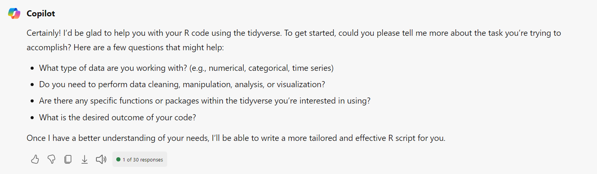
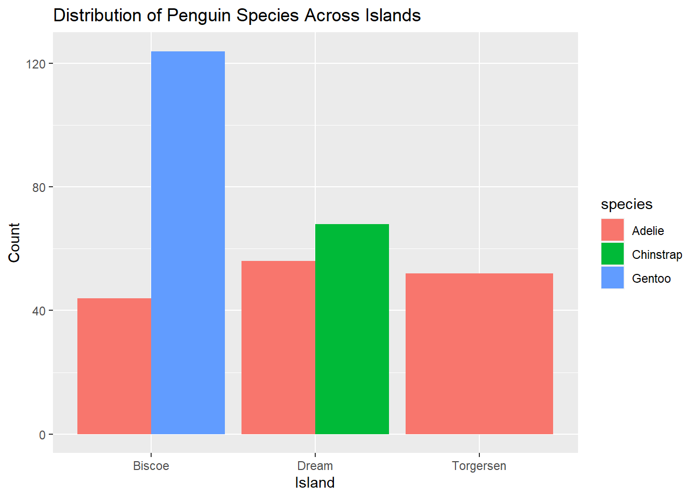
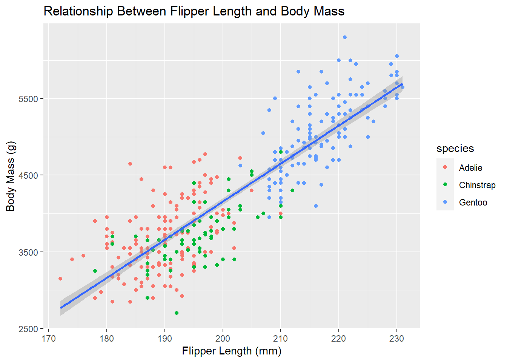
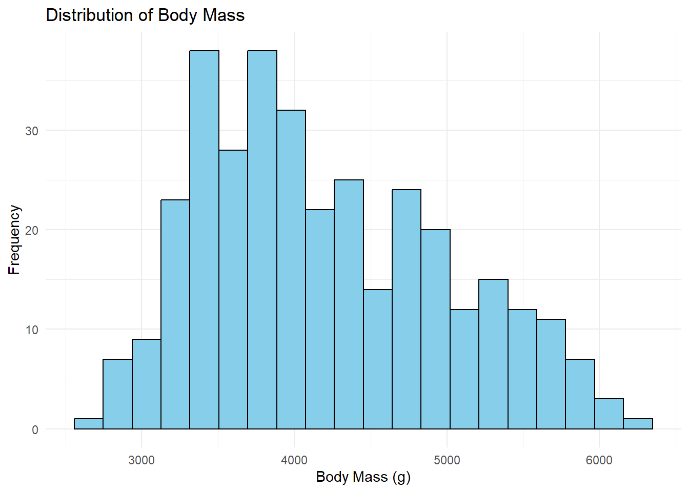
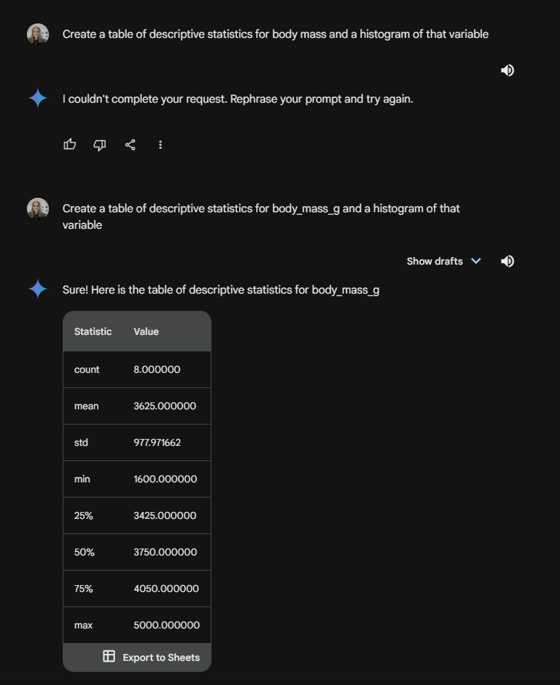
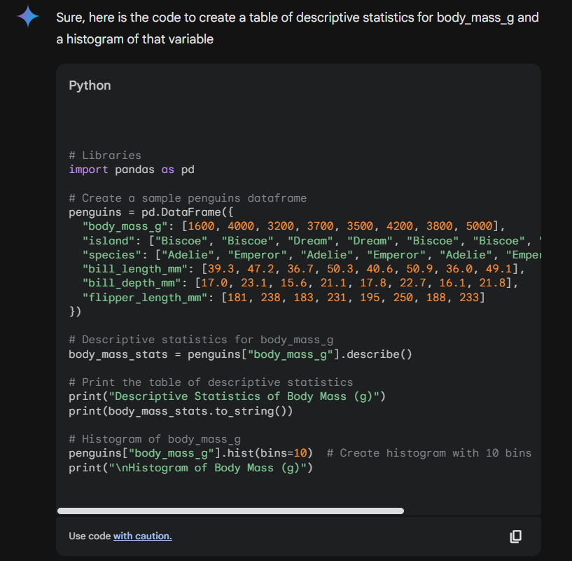

7 Writing Code with AI
Written by Emily Nordmann
The best AI platform for writing code is arguably Github Copilot (or Super Clippy as my programmer friends like to call it). However, unless coding is the main part of your job, most people are unlikely to have this subscription service so we’ll stick with the generic platforms.
If you have access to LinkedIn Learning (which you do if you are a UofG student or staff), I’d also highly recommend the short course Pair Programming with AI by Morten Rand-Hendriksen. It only takes 1.5 hours to work through and he covers using both Github Copilot and ChatGPT and has a nicely critical view of AI.
If you’ve worked through this entire book then hopefully what you’ve learned is that AI is very useful but I also hope that you have a healthy mistrust of anything it produces which is why this chapter is the last in the coding section.
The number 1 rule to keep in mind when using AI to write code is that the platforms we’re using are not intelligent. They are not thinking. They are not reasoning. They are not telling the truth or lying to you. They don’t have gaps in their knowledge because they have no knowledge. They are digital parrots on cocaine.
7.1 Activity 1: Set-up
Again we’ll use the palmerpenguins dataset for this exercise so open up an Rmd and run the following:
We’ll also do a little bit of set-up for the AI:
Act like an expert programmer in R. I want you to help me write code. The code should be commented and should use the tidyverse where possible. Ask me questions about the code before you write it if necessary.
7.2 Activity 2: Knowledge is power
When you input this starting prompt, there’s a good chance you’ll get something like the following:

Before you ask the AI to write code, it’s helpful to give it as much information as you can about your dataset. You could write out a description manually but there’s a few options to automate.
summary() is useful because it provides a list of all variables with some descriptive statistics so that the AI has a sense of the type and range of data:
species island bill_length_mm bill_depth_mm
Adelie :152 Biscoe :168 Min. :32.10 Min. :13.10
Chinstrap: 68 Dream :124 1st Qu.:39.23 1st Qu.:15.60
Gentoo :124 Torgersen: 52 Median :44.45 Median :17.30
Mean :43.92 Mean :17.15
3rd Qu.:48.50 3rd Qu.:18.70
Max. :59.60 Max. :21.50
NA's :2 NA's :2
flipper_length_mm body_mass_g sex year
Min. :172.0 Min. :2700 female:165 Min. :2007
1st Qu.:190.0 1st Qu.:3550 male :168 1st Qu.:2007
Median :197.0 Median :4050 NA's : 11 Median :2008
Mean :200.9 Mean :4202 Mean :2008
3rd Qu.:213.0 3rd Qu.:4750 3rd Qu.:2009
Max. :231.0 Max. :6300 Max. :2009
NA's :2 NA's :2 str() is also useful because it lists the variables, their data type, and the initial values for each variable. However, that means that you are giving it at least some of the raw data so you have to be very careful if you have sensitive / confidential data and you must ensure that any use of AI is in line with your data management plan. Using Copilot Enterprise means the data won’t be stored and used to train the AI further so it’s potentially the best option (which is not to say it’s safe or problem free, please be careful and critical!).
tibble [344 × 8] (S3: tbl_df/tbl/data.frame)
$ species : Factor w/ 3 levels "Adelie","Chinstrap",..: 1 1 1 1 1 1 1 1 1 1 ...
$ island : Factor w/ 3 levels "Biscoe","Dream",..: 3 3 3 3 3 3 3 3 3 3 ...
$ bill_length_mm : num [1:344] 39.1 39.5 40.3 NA 36.7 39.3 38.9 39.2 34.1 42 ...
$ bill_depth_mm : num [1:344] 18.7 17.4 18 NA 19.3 20.6 17.8 19.6 18.1 20.2 ...
$ flipper_length_mm: int [1:344] 181 186 195 NA 193 190 181 195 193 190 ...
$ body_mass_g : int [1:344] 3750 3800 3250 NA 3450 3650 3625 4675 3475 4250 ...
$ sex : Factor w/ 2 levels "female","male": 2 1 1 NA 1 2 1 2 NA NA ...
$ year : int [1:344] 2007 2007 2007 2007 2007 2007 2007 2007 2007 2007 ...Finally, ls() provides a list of all the variables in a given object. It doesn’t provide any info on the variable type or sample, but that does mean it’s the most secure and depending on the task, this might be all the info you really need to give the AI. I would suggest starting with ls() and only scaling up if necessary (and your data isn’t sensitive):
[1] "bill_depth_mm" "bill_length_mm" "body_mass_g"
[4] "flipper_length_mm" "island" "sex"
[7] "species" "year" In your AI of choice, input the following:
here are the variables in my data set
ls(penguins) [1] “bill_depth_mm” “bill_length_mm” “body_mass_g” “flipper_length_mm” [5] “island” “sex” “species” “year”
Without being asked, Copilot has provided some examples of how you might analyse this data using R and the code all works as intended.
# Load the tidyverse package
library(tidyverse)
# Assuming your data is in a dataframe called 'penguins'
# Let's start by getting a summary of each numerical variable
penguins %>%
summarise(
Average_Bill_Depth = mean(bill_depth_mm, na.rm = TRUE),
Average_Bill_Length = mean(bill_length_mm, na.rm = TRUE),
Average_Body_Mass = mean(body_mass_g, na.rm = TRUE),
Average_Flipper_Length = mean(flipper_length_mm, na.rm = TRUE)
)| Average_Bill_Depth | Average_Bill_Length | Average_Body_Mass | Average_Flipper_Length |
|---|---|---|---|
| 17.15117 | 43.92193 | 4201.754 | 200.9152 |
# Now, let's see the distribution of species across different islands
penguins %>%
count(island, species) %>%
ggplot(aes(x = island, y = n, fill = species)) +
geom_bar(stat = "identity", position = "dodge") +
labs(title = "Distribution of Penguin Species Across Islands",
x = "Island",
y = "Count")
# We can also explore the relationship between flipper length and body mass
penguins %>%
ggplot(aes(x = flipper_length_mm, y = body_mass_g)) +
geom_point(aes(color = species)) +
geom_smooth(method = "lm") +
labs(title = "Relationship Between Flipper Length and Body Mass",
x = "Flipper Length (mm)",
y = "Body Mass (g)")`geom_smooth()` using formula = 'y ~ x'Warning: Removed 2 rows containing non-finite values (`stat_smooth()`).Warning: Removed 2 rows containing missing values (`geom_point()`).
I find this hugely problematic. Psychology has spent the last decade dealing with a replication and reproducibility crisis stemming in part because of questionable research practices. As a researcher, you should be making informed decisions as to how you analyse your data and I fear that this type of output is going to increase phishing and atheoretical, exploratory-as-confirmatory nonsense. What happens when the example code the AI spits out without being asked turns out to be a significant regression model that you would never have predicted or run yourself? Are you going to delete it? Or convince yourself that you were going to run it anyway and there’s a perfectly logical explanation?
Before I have a full blown existential crisis, let’s get back on track.
7.3 Activity 3: Writing code
First, we’ll aim to produce a table of descriptive statistics for body_mass_g and a histogram. Because it has the exact variable and object names, it should write code we can easily copy and paste:
Create a table of descriptive statistics for body mass and a histogram of that variable
This is ChatGPT’s output (Copilot was very similar):
# Load the tidyverse package
library(tidyverse)
# Load the penguins dataset (assuming it's from the palmerpenguins package)
data("penguins")
# Check the structure of the dataset
str(penguins)tibble [344 × 8] (S3: tbl_df/tbl/data.frame)
$ species : Factor w/ 3 levels "Adelie","Chinstrap",..: 1 1 1 1 1 1 1 1 1 1 ...
$ island : Factor w/ 3 levels "Biscoe","Dream",..: 3 3 3 3 3 3 3 3 3 3 ...
$ bill_length_mm : num [1:344] 39.1 39.5 40.3 NA 36.7 39.3 38.9 39.2 34.1 42 ...
$ bill_depth_mm : num [1:344] 18.7 17.4 18 NA 19.3 20.6 17.8 19.6 18.1 20.2 ...
$ flipper_length_mm: int [1:344] 181 186 195 NA 193 190 181 195 193 190 ...
$ body_mass_g : int [1:344] 3750 3800 3250 NA 3450 3650 3625 4675 3475 4250 ...
$ sex : Factor w/ 2 levels "female","male": 2 1 1 NA 1 2 1 2 NA NA ...
$ year : int [1:344] 2007 2007 2007 2007 2007 2007 2007 2007 2007 2007 ...# Summary statistics for body mass
body_mass_summary <- penguins %>%
summarise(
Mean = mean(body_mass_g, na.rm = TRUE),
Median = median(body_mass_g, na.rm = TRUE),
SD = sd(body_mass_g, na.rm = TRUE),
Min = min(body_mass_g, na.rm = TRUE),
Max = max(body_mass_g, na.rm = TRUE)
)
# Print the summary statistics
print(body_mass_summary)# A tibble: 1 × 5
Mean Median SD Min Max
<dbl> <dbl> <dbl> <int> <int>
1 4202. 4050 802. 2700 6300# Create a histogram of body mass
ggplot(penguins, aes(x = body_mass_g)) +
geom_histogram(fill = "skyblue", color = "black", bins = 20) +
labs(
title = "Distribution of Body Mass",
x = "Body Mass (g)",
y = "Frequency"
) +
theme_minimal()Warning: Removed 2 rows containing non-finite values (`stat_bin()`).
Some notes:
- I didn’t have to use the exact variable name
body_mass_g, it has figured out from my request that’s the one I want to use. - It’s also figured out that we’re using the
palmerpenguinsdataset, although it hasn’t given us the code to load that package so if we just copied and pasted this into a fresh script without having loaded the data already, it wouldn’t work. - It’s used
na.rm = TRUEto ignore missing values. This is a very common choice but remember it is a choice. You might not want this. - Similarly, it’s specified
binwidth = 20for the histogram. Looking at the data this seems like a reasonable binwidth to use, but again, it is a decision the AI has imposed and you must be aware of what you’re accepting. - I am aware that I am using phrases like “choice” and “decision” that imbue the AI with consciousness. I know that’s not true, I just can’t figure out how to write it any other way.
ChatGPT and Copilot both worked well. Gemini on the other hand… had a bit of a moment. First, it told me that it couldn’t complete the request so I amended the variable name, thinking that perhaps it needed the exact name. It then produced a table rather than giving me the code. The numbers in this table look like plausible values for this dataset (although don’t match exactly) so I suspect it has information about the palmerpenguins dataset.

The issue is that I didn’t tell it to write me code -I told it to create a table which is did, although it’s interesting that both Copilot and ChatGPT understood the intent of my prompt and Gemini did not.
I then edited my prompt:
Write code to create a table of descriptive statistics for body_mass_g and a histogram of that variable
And it responded by giving me python code. Again, not technically wrong given the prompt but it does mean that it is ignoring the rest of the conversation and the initial set-up prompt. Following up to ask specifically for R code worked, but it’s not a good start for Gemini.

7.4 Activity 4: Giving the AI more freedom
My initial request to write code was relatively simple and relatively well-specified but let’s try an example where there’s more room for the AI to make choices.
Create a new variable that codes each penguin as chonky_boi if they’re a large male, chonky_gurl if they’re a large female, smol_boi if they’re a small male, and smol_boi if they’re a small female.
This prompt gives a lot of leeway. I haven’t specified what to call the new variable, what criteria should be used to determine large and small, or what to do with observations that are neither.
ChatGPT used percentiles to determine category, however, this code didn’t work - it returns all observations as “average”:
# Create a new variable based on conditions
penguins <- penguins %>%
mutate(chonkiness = case_when(
sex == "Male" & body_mass_g > quantile(body_mass_g, 0.75, na.rm = TRUE) ~ "chonky_boi",
sex == "Female" & body_mass_g > quantile(body_mass_g, 0.75, na.rm = TRUE) ~ "chonky_gurl",
sex == "Male" & body_mass_g <= quantile(body_mass_g, 0.25, na.rm = TRUE) ~ "smol_boi",
sex == "Female" & body_mass_g <= quantile(body_mass_g, 0.25, na.rm = TRUE) ~ "smol_gurl",
TRUE ~ "average"
))In this code:
We use the case_when() function to define the conditions based on sex and body mass to categorize the penguins.
For males with a body mass greater than the 75th percentile, they are categorized as “chonky_boi.” For females with a body mass greater than the 75th percentile, they are categorized as “chonky_gurl.”
For males with a body mass less than or equal to the 25th percentile, they are categorized as “smol_boi.” For females with a body mass less than or equal to the 25th percentile, they are also categorized as “smol_gurl.”
All other penguins are categorized as “average.”
We then use mutate() to create the new variable “chonkiness” based on these conditions.
I will spare you the full adventure (my chat history is here if you’d like to see) but after quite a bit of back-and-forth I realised that in the dataset “male” and “female” should both be lowercase and the code ChatGPT gave me had capitalised them both. There is no substitute for knowing your data.
Once I changed this, it worked.
# Create a new variable based on conditions
penguins <- penguins %>%
mutate(chonkiness = case_when(
sex == "male" & body_mass_g > quantile(body_mass_g, 0.75, na.rm = TRUE) ~ "chonky_boi",
sex == "female" & body_mass_g > quantile(body_mass_g, 0.75, na.rm = TRUE) ~ "chonky_gurl",
sex == "male" & body_mass_g <= quantile(body_mass_g, 0.25, na.rm = TRUE) ~ "smol_boi",
sex == "female" & body_mass_g <= quantile(body_mass_g, 0.25, na.rm = TRUE) ~ "smol_gurl",
TRUE ~ "average"
))Copilot used a median split and didn’t try and create a third category, which is a questionable choice because the wording of the prompt really implies there needs to be something that the penguins are larger or smaller than. The code did work out of the box but remember the Jurassic Park rule: just because you can, doesn’t mean you should.
# Assuming 'penguins' is your dataframe and 'body_mass_g' is the variable for body mass
# First, we need to define what we consider 'large' and 'small'.
# For this example, let's assume penguins heavier than the median are 'large',
# and those equal or lighter are 'small'.
# Calculate the median body mass
median_body_mass <- median(penguins$body_mass_g, na.rm = TRUE)
# Create the new variable 'size_category'
penguins <- penguins %>%
mutate(size_category = case_when(
body_mass_g > median_body_mass & sex == "male" ~ "chonky_boi",
body_mass_g > median_body_mass & sex == "female" ~ "chonky_gurl",
body_mass_g <= median_body_mass & sex == "male" ~ "smol_boi",
body_mass_g <= median_body_mass & sex == "female" ~ "smol_gurl",
TRUE ~ NA_character_ # for missing or other values
))This code is a good example of why LLMs are inherently Luddites, even if they produce working code. When there’s missing data, case_when() used to require you to specify the type of NA, in this case NA_character. This is very uninintuitive, particularly when you’re trying to teach beginner coders (how can missing data have a type? is an entirely reasonable question) so I was delighted when it updated to remove this requirement. Additionally, TRUE was also changed to default which is a bit more readable.
However, these changes are not reflected in Copilot’s code suggestion because the training data is older than the most recent update to case_when(). This example is relatively minor but it’s important to recognise that if you only use these kinds of AI to write code, you will very quickly be writing outdated code and using deprecated functions.
Gemini once again told me it could not complete my request and I have given up using it for the remainder of this chapter.
7.5 Activity 5: Further analysis
To give one last example, I entered the following prompt:
write me code to run a linear regression predicting body mass from sex. also include the code to perform necessary assumption tests using the easystats performance package.
library(tidyverse)
library(easystats)
# Load the penguins dataset
data("penguins")
# Filter out rows with missing values in body mass or sex
penguins <- penguins %>%
filter(!is.na(body_mass_g) & !is.na(sex))
# Convert sex to lowercase
penguins$sex <- tolower(penguins$sex)
# Run linear regression predicting body mass from sex
lm_model <- lm(body_mass_g ~ sex, data = penguins)
# Display summary of the linear regression model
summary(lm_model)
Call:
lm(formula = body_mass_g ~ sex, data = penguins)
Residuals:
Min 1Q Median 3Q Max
-1295.7 -595.7 -237.3 737.7 1754.3
Coefficients:
Estimate Std. Error t value Pr(>|t|)
(Intercept) 3862.27 56.83 67.963 < 2e-16 ***
sexmale 683.41 80.01 8.542 4.9e-16 ***
---
Signif. codes: 0 '***' 0.001 '**' 0.01 '*' 0.05 '.' 0.1 ' ' 1
Residual standard error: 730 on 331 degrees of freedom
Multiple R-squared: 0.1806, Adjusted R-squared: 0.1781
F-statistic: 72.96 on 1 and 331 DF, p-value: 4.897e-16Error in check_assumptions(lm_model): could not find function "check_assumptions"ChatGPT refuses to forget that in my conversation history there was an issue with the code not being lowercase, so it’s now including functions to covert to lowercase, even though it’s completely unnecessary.
It’s also introduced an error. The function should be check_model() not check_assumptions(). I know this because I know the package. The further away you get from what you could do yourself, the harder it will be to fix any errors and check what it has gotten wrong.
7.6 Conclusions and musings
A large part of coding is looking up examples of code you’ve used before and then tweaking it to your new use case. If you use AI like this, then it can really help speed you up by giving you access to boiler plate code you can adapt. I also find it very useful for those functions that just refuse to stick in my brain - every time I try to change the labels on a faceted ggplot() I get it wrong. These days I just go straight to ChatGPT.
Additionally, if what you’re wanting to achieve is relatively simple - descriptive stats, basic plots, simple wrangling and cleaning - it can’t go that far wrong and it’s usually easy enough to spot when something is wrong.
These use cases work well because it’s your expertise that drives what the AI does and reviewing and tweaking the output is built-in to these workflows. These are the AI skills that everyone is going to need.
But using code written by an AI that you don’t understand is dangerous and irresponsible. Think of all the stupid errors it has made throughout this book, and then imagine someone using it to write code for their medical research. I dread to think of the impact that this abdication of responsibility and expertise is going to have (and will already be having).
This is a depressing way to end this book so I gave all three AIs the prompt:
Write me a fun piece of R code.
ChatGPT reassuring me comedy isn’t going to be outsourced any time soon:
# Function to generate a random joke
generate_joke <- function() {
jokes <- c(
"Why don't scientists trust atoms? Because they make up everything!",
"I told my wife she was drawing her eyebrows too high. She looked surprised!",
"Why did the scarecrow win an award? Because he was outstanding in his field!",
"Why don't skeletons fight each other? They don't have the guts!",
"I'm reading a book on anti-gravity. It's impossible to put down!"
)
return(sample(jokes, 1))
}
# Generate and print a random joke
cat("Here's a random joke for you:\n")Here's a random joke for you:I'm reading a book on anti-gravity. It's impossible to put down! Gemini reassuring me art isn’t going to be outsourced any time soon:
# Define a list of ASCII art characters
art_chars <- c("#", "%", "@", "&", "$", "*")
# Function to generate a random character
get_art_char <- function() {
return(sample(art_chars, 1))
}
# Set picture dimensions (width and height)
picture_width <- 50
picture_height <- 20
# Create an empty matrix to store the picture
art_matrix <- matrix(nrow = picture_height, ncol = picture_width)
# Fill the matrix with random characters
for (i in 1:picture_height) {
for (j in 1:picture_width) {
art_matrix[i, j] <- get_art_char()
}
}
# Convert the matrix to a string for printing
art_string <- apply(art_matrix, 1, FUN = paste, collapse = "")
art_string <- paste(art_string, collapse = "\n")
# Print the ASCII art picture
cat("Your random ASCII art:", art_string, sep = "\n")Your random ASCII art:
$&#%#@#*%##*#*&#&*##$$#$$@*#%*#%%&$$*$@%#*&$$$@$$@
$*#$#&#***#&%%##@@##*##$$*%$&#%@%*%$#@&#&$%@***&@#
*@@***#@*%*@@*@#*&$$@*@%#*&&&@&$@%&**@#$&*%@%**&*%
$&@@$&*&&#$@$%%#*#*&@%$@*#*&#@&%&@&@&&&*$@@$&@#%$@
@#%#%#*%##@$@@**&&#*@%&*%&**&##*#&#%*@$$@$@%#*%&*#
$&%$*@&##$*$&@#%#@#$$&%#$@$#%$##%#$$$*&$%#&#$###@%
###%*@*&%*$*&#@&%%#%#*$$#%%*&*@*$%#%$$*@%&&&&%#%#$
%$*$&$*@&&%*##%*&$@%$*##***$$&%%$*#*&$%&%*%@@#&*%@
**%@@*%#$@@#@$%*#%$$%%%$#*%#$&&$$%&$$*@*$%#&$$@%@#
@@#%&&@$$%@##%*%*&&%&@$*#*$#&*&$@#*@*%#&$%@&@%##&*
#*#$#$%#%@$#@**##%%$*&#@$#&$##%#@@&#%**%$&**$%$#$@
#&%&&***%*&@@&#*&#&@%*###@@@*&$&$%*&$&*%&%$$&$&@*$
%#%*#*&@&&&*#$&$$%#@*@@**@&#$$**%@&&$$#%$&*%$@*%@&
%%$%&&#$%#$#*$%*@@#@###@##&@&$&$@%$@#%%$@%$@%@$&%$
#&%%@&*%#$%#*&&$&**#@&**$&#%%$%%%$@&@%$&%*#&$$$%#*
$*&##$@##&#@#@%&&@&%%&*@@#@&#&&@$&&*###%$@@%%*@$**
*&*%$$@@##$$%#&@*$$@%##@#$%*&&%#@%*@&#@$@#%*$@@$$%
##&###%&$@%$*$&**$@%##@*%#**%*@&$%@*@@$@@&*@*%@#@$
##$@$@%@@&%@%%##*%$&*#$&#$#&@**#%$##&%#$*$&#$#@$##
*%&%$@#$%%&**@%%#$#$$@#&$$*@#*&@%*$#&%$@*$*#**@%**Copilot on its way to Vegas (ok I actually quite like this one):
# Simple Slot Machine in R
set.seed(Sys.time()) # Seed for randomness based on current time
# Function to spin the slot machine
spin_slot_machine <- function() {
fruits <- c("🍒", "🍋", "🍊", "🍉", "🍇", "🍓")
spin <- sample(fruits, size = 3, replace = TRUE)
cat("Spinning... You got:", spin, "\n")
if (length(unique(spin)) == 1) {
cat("Congratulations! You won! 🎉\n")
} else {
cat("Try again! 🍀\n")
}
}
# Spin the slot machine
spin_slot_machine()Spinning... You got: 🍒 🍋 🍊
Try again! 🍀This book was written in Spring 2024 and should be considered a living document. The functionality and capability of AI is changing rapidly and the most recent advances may not reflect what is described in this book. Given the brave new world in which we now live, all constructive feedback and suggestions are welcome! If you have any feedback or suggestions, please provide it via Forms.